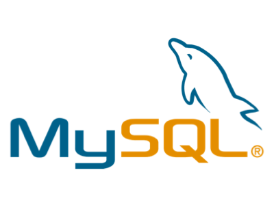

Au cours de cette formation nous allons avoir 2 matières :
L'integration
Le HTML :
HTML

Le Html sert à créer le contenu du site : elle va contenir uniquement la partie textuelle du site.
Le CSS :

Le CSS va nous permettre d'ajouter la couche ggraphique à notre site: les couleurs, les formes, le fond, etc.
Le développement :
Le Javascript :
Javascript est un lagage de programmation de script employé pour rendre une page web interactive, le comportement de la page et son apparence pourra varier en fonction de certains paramètres
Le PHP :
Le PHP est un langage de programmation libre, utilisé pour généré des pages web dynamiques, qui sont donc modifiés en fonction de certaines informations (heure, nom de l'utilisateur, formulaire rempli par l'utilisateur etc.)
MySQL :
MySQL est un système de gestion de bases de données, il permetd'enregistrer des informations rempli par l'utilisateur (exemple : formulairede création de compte)pour ensuite être ré-utilisé au moment approprié (ex: connexion à un site internet avec identifiant et mot de passe).
400 heures de formation intensive :
Le programme de formation de la 3W Academy est découpé en 57 modules.
- HTML, CSS, Responsive web design, Wordpress, Bootsrap: 16 modules
- Javascript : 12 modules
- PHP, MySQL, POO, MVC : 25 modules
- Symfony : 4 modules
Et ici, nous allons un peu jouer avec le CSS !
Les couleurs du texte : Et Ma police sera Arial !
Ce paragraphe est rouge.
Ce paragraphe est bleu.
Ce paragraphe est vert.
Les couleurs de fond : Et ma police sera monospace !
Ce paragraphe est rouge.
Ce paragraphe est bleu.
Ce paragraphes est vert.